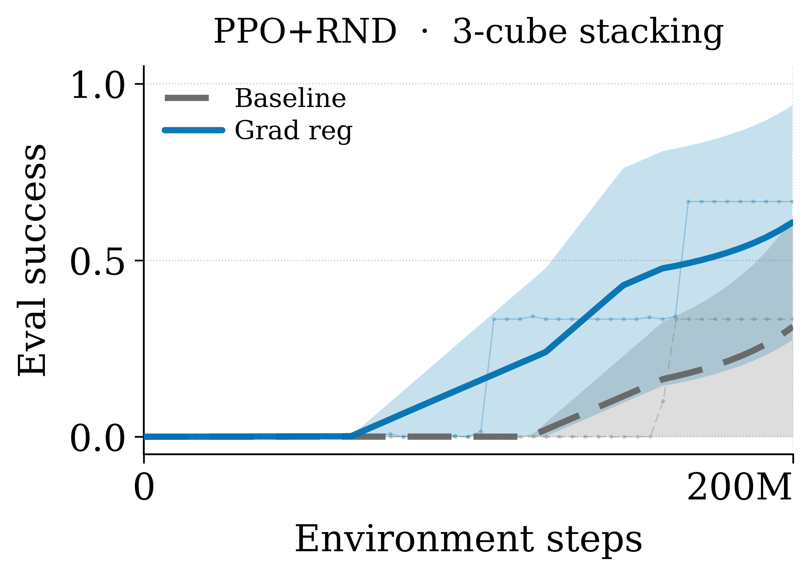
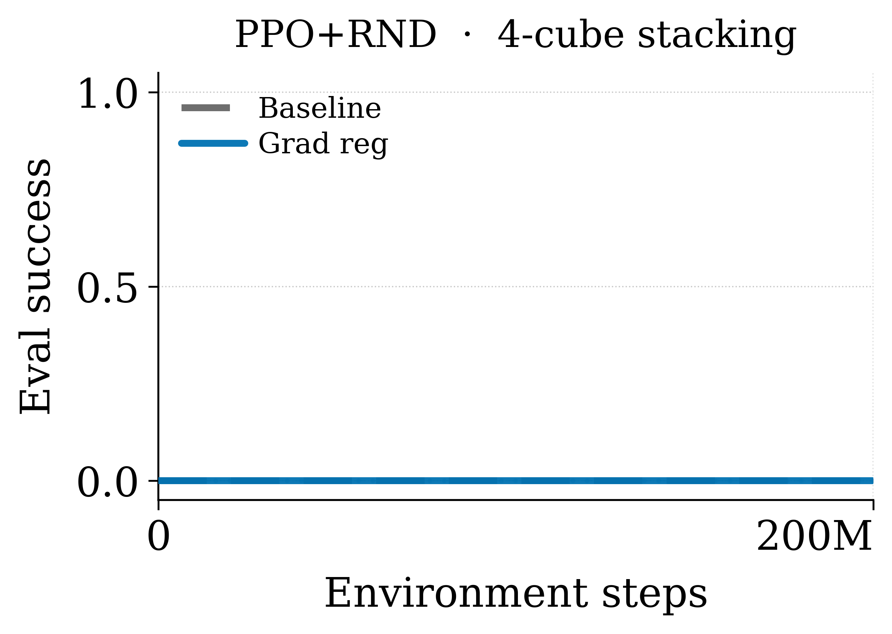
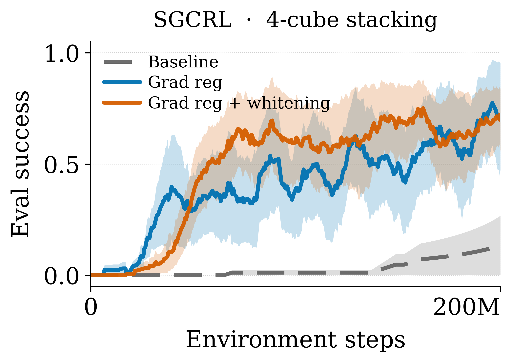
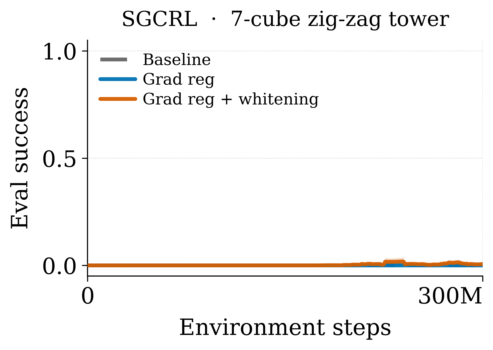
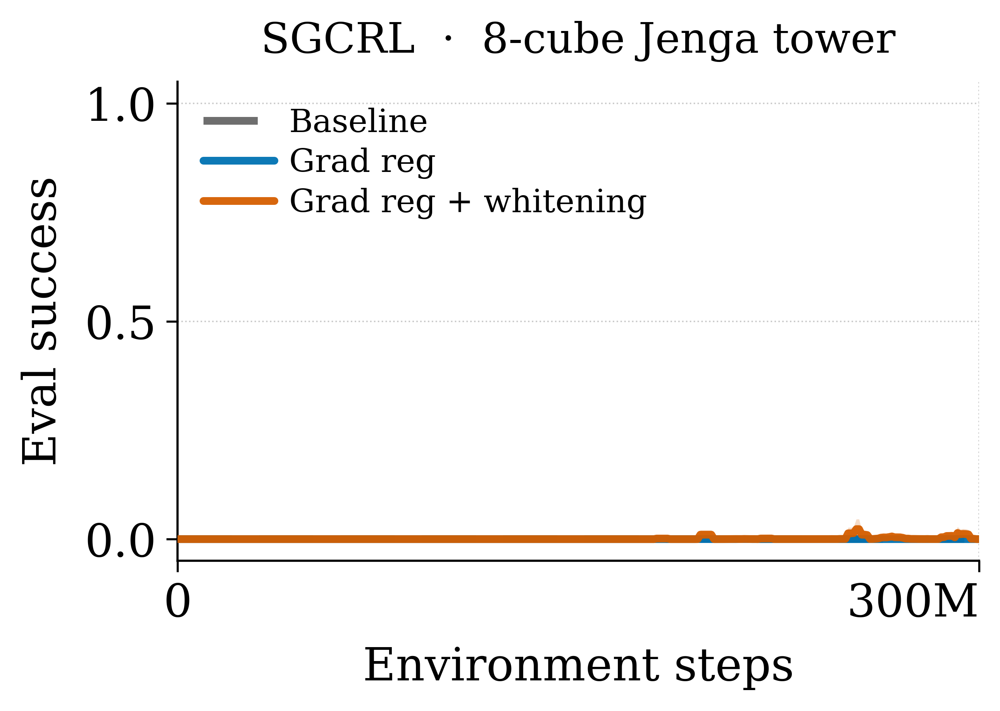
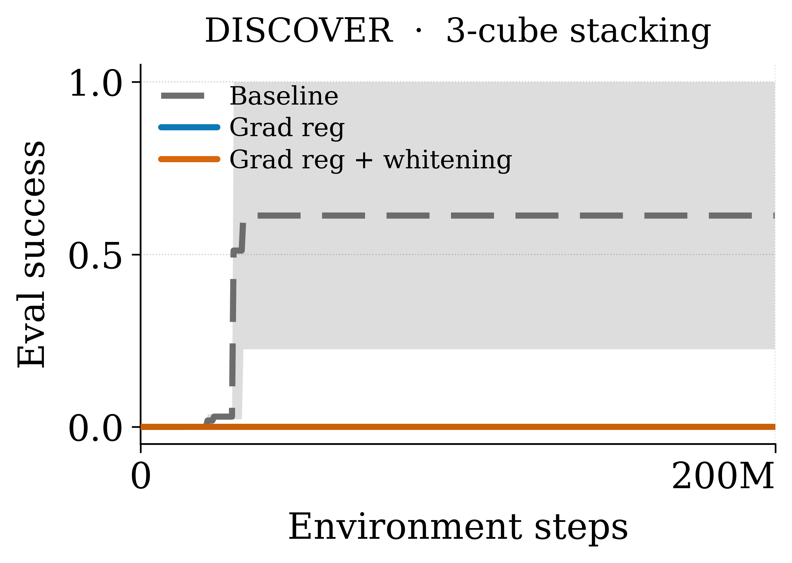

Do gradient regularizer and goal normalization improve the performance of the best baselines?
RND

rnd_c3t1 · 3-cube stacking

rnd_c4t1 · 4-cube stacking
SGCRL

sgcrl_c4t1 · 4-cube stacking

sgcrl_c7t2 · 7-cube zig-zag tower

sgcrl_c8t2 · 8-cube Jenga tower
DISCOVER

discover_c3t1 · 3-cube stacking